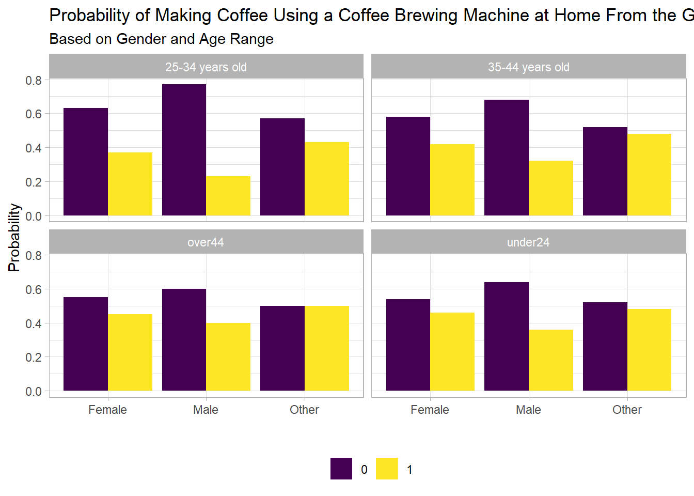
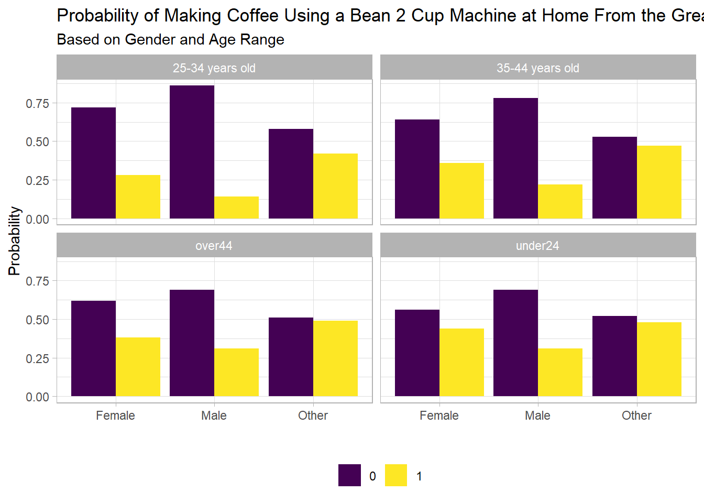
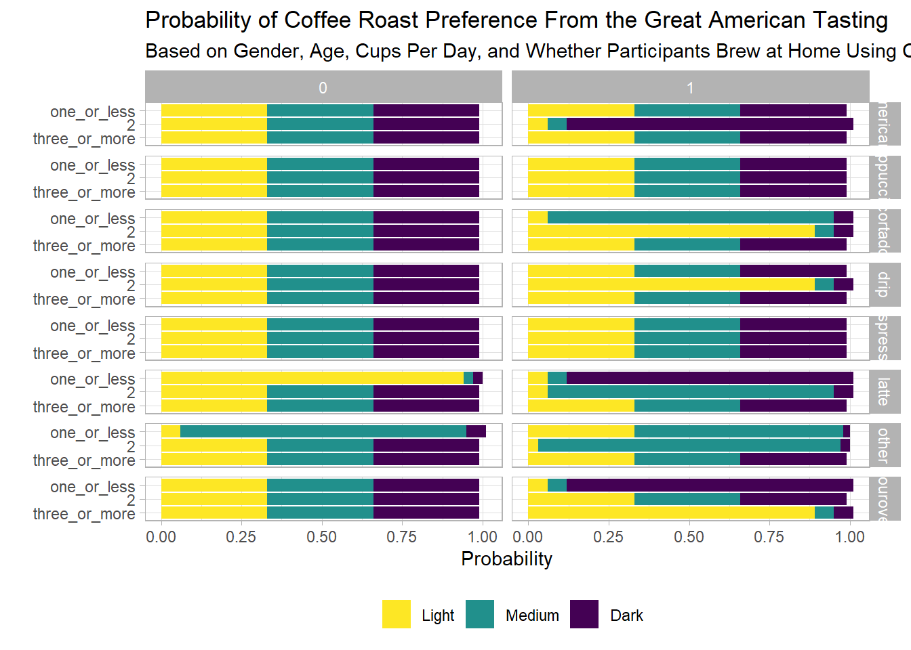

Loading required package: graph
Loading required package: BiocGenerics
Attaching package: 'BiocGenerics'
The following object is masked from 'package:bnlearn':
score
The following objects are masked from 'package:lubridate':
intersect, setdiff, union
The following objects are masked from 'package:dplyr':
combine, intersect, setdiff, union
The following objects are masked from 'package:stats':
IQR, mad, sd, var, xtabs
The following objects are masked from 'package:base':
anyDuplicated, aperm, append, as.data.frame, basename, cbind,
colnames, dirname, do.call, duplicated, eval, evalq, Filter, Find,
get, grep, grepl, intersect, is.unsorted, lapply, Map, mapply,
match, mget, order, paste, pmax, pmax.int, pmin, pmin.int,
Position, rank, rbind, Reduce, rownames, sapply, setdiff, table,
tapply, union, unique, unsplit, which.max, which.min
Attaching package: 'graph'
The following objects are masked from 'package:bnlearn':
degree, nodes, nodes<-
The following object is masked from 'package:stringr':
boundary
Loading required package: grid
library(reactable)library(ggdag)
Attaching package: 'ggdag'
The following object is masked from 'package:stats':
filter
library(dagitty)
Attaching package: 'dagitty'
The following object is masked from 'package:Rgraphviz':
graphLayout
The following object is masked from 'package:graph':
edges
The following objects are masked from 'package:bnlearn':
ancestors, children, descendants, parents, spouses
Rows: 4042 Columns: 113
── Column specification ────────────────────────────────────────────────────────
Delimiter: ","
chr (44): Submission ID, What is your age?, How many cups of coffee do you t...
dbl (13): Lastly, how would you rate your own coffee expertise?, Coffee A - ...
lgl (56): Where do you typically drink coffee? (At home), Where do you typic...
ℹ Use `spec()` to retrieve the full column specification for this data.
ℹ Specify the column types or set `show_col_types = FALSE` to quiet this message.
coffee_drop |>select( age,matches("personal_pref" ) ) |>pivot_longer(-age ) |>group_by( age, name ) |>count( value ) |>mutate(value =as.factor(value),age =as.factor(age),age =fct_relevel( age,"<18 years old","18-24 years old","25-34 years old","35-44 years old","45-54 years old","55-64 years old",">65 years old" ),name =case_when( name =="coffee_a_personal_preference"~"Coffee A Preference", name =="coffee_b_personal_preference"~"Coffee B Preference", name =="coffee_c_personal_preference"~"Coffee C Preference", name =="coffee_d_personal_preference"~"Coffee D Preference" ) ) |>drop_na() |>ggplot(aes( age, n ) ) +geom_col(position =position_dodge(),aes(fill = value ) ) +facet_wrap(~name ) + viridis::scale_fill_viridis(discrete =TRUE ) +labs(x ="",y ="Counts",fill ="Rating" ) +theme(legend.position ="top",strip.background =element_rect(fill ="white" ),strip.text =element_text(color ="black" ),axis.text.x =element_text(angle =45,vjust =0.5 ) ) +NULL
coffee_drop |>select( gender,matches("personal_pref" ) ) |>pivot_longer(-gender ) |>group_by( gender, name ) |>count( value ) |>mutate(value =as.factor(value),gender =as.factor(gender),name =as.factor(name),gender =fct_relevel( gender,"Male","Female","Non-binary","Other (please specify)","Prefer not to say" ),name =case_when( name =="coffee_a_personal_preference"~"Coffee A Preference", name =="coffee_b_personal_preference"~"Coffee B Preference", name =="coffee_c_personal_preference"~"Coffee C Preference", name =="coffee_d_personal_preference"~"Coffee D Preference" ) ) |>drop_na() |>ggplot(aes( gender, n ) ) +geom_col(position =position_dodge(),aes(fill = value ) ) +facet_wrap(~name ) + viridis::scale_fill_viridis(discrete =TRUE ) +labs(x ="",y ="Counts",fill ="Rating" ) +theme(legend.position ="top",strip.background =element_rect(fill ="white" ),strip.text =element_text(color ="black" ) ) +NULL
coffee_drop |>select( gender,matches("personal_pref" ) ) |>pivot_longer(-gender ) |>group_by( gender, name ) |>count( value ) |>mutate(value =as.factor(value),gender =as.factor(gender),name =as.factor(name),gender =fct_relevel( gender,"Male","Female","Non-binary","Other (please specify)","Prefer not to say" ),name =case_when( name =="coffee_a_personal_preference"~"Coffee A Preference", name =="coffee_b_personal_preference"~"Coffee B Preference", name =="coffee_c_personal_preference"~"Coffee C Preference", name =="coffee_d_personal_preference"~"Coffee D Preference" ) ) |>drop_na() |>filter(!gender %in%c("Male", "Female") ) |>ggplot(aes( gender, n ) ) +geom_col(position =position_dodge(),aes(fill = value ) ) +facet_wrap(~name ) + viridis::scale_fill_viridis(discrete =TRUE ) +labs(x ="",y ="Counts",fill ="Rating" ) +theme(legend.position ="top",strip.background =element_rect(fill ="white" ),strip.text =element_text(color ="black" ) ) +NULL
dag_fit$cup_per_day$prob |>as_tibble() |>mutate(n =round(n, 2) ) |>gg_func(x = cup_per_day, y = n, fill = gender, facet = age) +labs(title ="Probability of Cups of Coffee Per Day From the Great American Tasting",subtitle ="Based on Gender and Age Range",x ="",y ="Probability",fill ="" ) +theme(legend.position ="bottom" )
Home Brewing - Pourover
dag_fit$home_brew_pour_over$prob |>as_tibble() |>mutate(n =round(n, 2) ) |>gg_func(x = gender, y = n, fill = home_brew_pour_over, facet = age) +labs(title ="Probability of Making Pourover at Home From the Great American Tasting",subtitle ="Based on Gender and Age Range",x ="",y ="Probability",fill ="" ) +theme(legend.position ="bottom" )
Home Brewing - French Press
dag_fit$home_brew_french_press$prob |>as_tibble() |>mutate(n =round(n, 2) ) |>gg_func(x = gender, y = n, fill = home_brew_french_press, facet = age) +labs(title ="Probability of Making French Press at Home From the Great American Tasting",subtitle ="Based on Gender and Age Range",x ="",y ="Probability",fill ="" ) +theme(legend.position ="bottom" )
Home Brewing - Espresso
dag_fit$home_brew_espresso$prob |>as_tibble() |>mutate(n =round(n, 2) ) |>gg_func(x = gender, y = n, fill = home_brew_espresso, facet = age) +labs(title ="Probability of Making Espresso at Home From the Great American Tasting",subtitle ="Based on Gender and Age Range",x ="",y ="Probability",fill ="" ) +theme(legend.position ="bottom" )
Home Brewing - coffee Brewing Machine
dag_fit$home_brew_mr_coffee$prob |>as_tibble() |>mutate(n =round(n, 2) ) |>gg_func(x = gender, y = n, fill = home_brew_mr_coffee, facet = age) +labs(title ="Probability of Making Coffee Using a Coffee Brewing Machine at Home From the Great American Tasting",subtitle ="Based on Gender and Age Range",x ="",y ="Probability",fill ="" ) +theme(legend.position ="bottom" )

Home Brewing - Pods
dag_fit$home_brew_pods$prob |>as_tibble() |>mutate(n =round(n, 2) ) |>gg_func(x = gender, y = n, fill = home_brew_pods, facet = age) +labs(title ="Probability of Making Coffee Using Pods at Home From the Great American Tasting",subtitle ="Based on Gender and Age Range",x ="",y ="Probability",fill ="" ) +theme(legend.position ="bottom" )
Home Brewing - Instant Coffee
dag_fit$home_brew_instant$prob |>as_tibble() |>mutate(n =round(n, 2) ) |>gg_func(x = gender, y = n, fill = home_brew_instant, facet = age) +labs(title ="Probability of Making Instant Coffee at Home From the Great American Tasting",subtitle ="Based on Gender and Age Range",x ="",y ="Probability",fill ="" ) +theme(legend.position ="bottom" )
Home Brewing - Bean 2 Cup
dag_fit$home_brew_bean2cup$prob |>as_tibble() |>mutate(n =round(n, 2) ) |>gg_func(x = gender, y = n, fill = home_brew_bean2cup, facet = age) +labs(title ="Probability of Making Coffee Using a Bean 2 Cup Machine at Home From the Great American Tasting",subtitle ="Based on Gender and Age Range",x ="",y ="Probability",fill ="" ) +theme(legend.position ="bottom" )

Home Brewing - Cold Brew
dag_fit$home_brew_cold_brew$prob |>as_tibble() |>mutate(n =round(n, 2) ) |>gg_func(x = gender, y = n, fill = home_brew_cold_brew, facet = age) +labs(title ="Probability of Making Cold Brew at Home From the Great American Tasting",subtitle ="Based on Gender and Age Range",x ="",y ="Probability",fill ="" ) +theme(legend.position ="bottom" )
Home Brewing - Cometeer
dag_fit$home_brew_cometeer$prob |>as_tibble() |>mutate(n =round(n, 2) ) |>gg_func(x = gender, y = n, fill = home_brew_cometeer, facet = age) +labs(title ="Probability of Making Cometeer Coffees at Home From the Great American Tasting",subtitle ="Based on Gender and Age Range",x ="",y ="Probability",fill ="" ) +theme(legend.position ="bottom" )
Home Brewing - Other
dag_fit$home_brew_other$prob |>as_tibble() |>mutate(n =round(n, 2) ) |>gg_func(x = gender, y = n, fill = home_brew_other, facet = age) +labs(title ="Probability of Making Coffee From Other Methods at Home From the Great American Tasting",subtitle ="Based on Gender and Age Range",x ="",y ="Probability",fill ="" ) +theme(legend.position ="bottom" )
Favorite Coffee Drink - CPT
dag_fit$favorite_coffee_drink$prob |>as_tibble() |>mutate(n =round(n, 2) ) |>gg_func(x = favorite_coffee_drink,y = n,fill = gender,facet = age ) +labs(title ="Probability of Favorite Coffee Drinks From the Great American Tasting",subtitle ="Based on Gender and Age Range",x ="",y ="Probability",fill ="" ) +theme(legend.position ="bottom" )
The CPT here only include the probabilities for whether participants used one home brewer or not and considered all of the other home brewers as not using those at home.
roast_pref_func(dag_table = dag_fit$roast_preference$prob[1:3, 1:3, 1:2, 1, 1, 1, 1, 1, 1, 1, 1, 1, 1:8],x = cup_per_day,y = n,fill = roast_preference,facet_x = favorite_coffee_drink,facet_y = home_brew_pour_over) +labs(title ="Probability of Coffee Roast Preference From the Great American Tasting",subtitle ="Based on Gender, Age, Cups Per Day, and Whether Participants Brew at Home Using a Pourover",x ="",y ="Probability",fill ="" ) +theme(legend.position ="bottom" )
roast_pref_func(dag_table = dag_fit$roast_preference$prob[1:3, 1:3, 1, 1:2, 1, 1, 1, 1, 1, 1, 1, 1, 1:8],x = cup_per_day,y = n,fill = roast_preference,facet_x = favorite_coffee_drink,facet_y = home_brew_french_press) +labs(title ="Probability of Coffee Roast Preference From the Great American Tasting",subtitle ="Based on Gender, Age, Cups Per Day, and Whether Participants Brew at Home Using a French Press",x ="",y ="Probability",fill ="" ) +theme(legend.position ="bottom" )
roast_pref_func(dag_table = dag_fit$roast_preference$prob[1:3, 1:3, 1, 1, 1:2, 1, 1, 1, 1, 1, 1, 1, 1:8],x = cup_per_day,y = n,fill = roast_preference,facet_x = favorite_coffee_drink,facet_y = home_brew_espresso) +labs(title ="Probability of Coffee Roast Preference From the Great American Tasting",subtitle ="Based on Gender, Age, Cups Per Day, and Whether Participants Brew Espresso at Home",x ="",y ="Probability",fill ="" ) +theme(legend.position ="bottom" )
roast_pref_func(dag_table = dag_fit$roast_preference$prob[1:3, 1:3, 1, 1, 1, 1:2, 1, 1, 1, 1, 1, 1, 1:8],x = cup_per_day,y = n,fill = roast_preference,facet_x = favorite_coffee_drink,facet_y = home_brew_mr_coffee) +labs(title ="Probability of Coffee Roast Preference From the Great American Tasting",subtitle ="Based on Gender, Age, Cups Per Day, and Whether Participants Brew at Home Using a Coffee Machine",x ="",y ="Probability",fill ="" ) +theme(legend.position ="bottom" )
roast_pref_func(dag_table = dag_fit$roast_preference$prob[1:3, 1:3, 1, 1, 1, 1, 1:2, 1, 1, 1, 1, 1, 1:8],x = cup_per_day,y = n,fill = roast_preference,facet_x = favorite_coffee_drink,facet_y = home_brew_pods) +labs(title ="Probability of Coffee Roast Preference From the Great American Tasting",subtitle ="Based on Gender, Age, Cups Per Day, and Whether Participants Brew at Home Using Pods",x ="",y ="Probability",fill ="" ) +theme(legend.position ="bottom" )
roast_pref_func(dag_table = dag_fit$roast_preference$prob[1:3, 1:3, 1, 1, 1, 1, 1, 1:2, 1, 1, 1, 1, 1:8],x = cup_per_day,y = n,fill = roast_preference,facet_x = favorite_coffee_drink,facet_y = home_brew_instant) +labs(title ="Probability of Coffee Roast Preference From the Great American Tasting",subtitle ="Based on Gender, Age, Cups Per Day, and Whether Participants Brew at Home Using Instant Coffee",x ="",y ="Probability",fill ="" ) +theme(legend.position ="bottom" )
roast_pref_func(dag_table = dag_fit$roast_preference$prob[1:3, 1:3, 1, 1, 1, 1, 1, 1, 1:2, 1, 1, 1, 1:8],x = cup_per_day,y = n,fill = roast_preference,facet_x = favorite_coffee_drink,facet_y = home_brew_bean2cup) +labs(title ="Probability of Coffee Roast Preference From the Great American Tasting",subtitle ="Based on Gender, Age, Cups Per Day, and Whether Participants Brew at Home Using a Bean 2 Cup Machine",x ="",y ="Probability",fill ="" ) +theme(legend.position ="bottom" )
roast_pref_func(dag_table = dag_fit$roast_preference$prob[1:3, 1:3, 1, 1, 1, 1, 1, 1, 1, 1:2, 1, 1, 1:8],x = cup_per_day,y = n,fill = roast_preference,facet_x = favorite_coffee_drink,facet_y = home_brew_cold_brew) +labs(title ="Probability of Coffee Roast Preference From the Great American Tasting",subtitle ="Based on Gender, Age, Cups Per Day, and Whether Participants Brew Cold Brew at Home",x ="",y ="Probability",fill ="" ) +theme(legend.position ="bottom" )
roast_pref_func(dag_table = dag_fit$roast_preference$prob[1:3, 1:3, 1, 1, 1, 1, 1, 1, 1, 1, 1:2, 1, 1:8],x = cup_per_day,y = n,fill = roast_preference,facet_x = favorite_coffee_drink,facet_y = home_brew_cometeer) +labs(title ="Probability of Coffee Roast Preference From the Great American Tasting",subtitle ="Based on Gender, Age, Cups Per Day, and Whether Participants Brew at Home Using Cometeer",x ="",y ="Probability",fill ="" ) +theme(legend.position ="bottom" )

roast_pref_func(dag_table = dag_fit$roast_preference$prob[1:3, 1:3, 1, 1, 1, 1, 1, 1, 1, 1, 1, 1:2, 1:8],x = cup_per_day,y = n,fill = roast_preference,facet_x = favorite_coffee_drink,facet_y = home_brew_other) +labs(title ="Probability of Coffee Roast Preference From the Great American Tasting",subtitle ="Based on Gender, Age, Cups Per Day, and Whether Participants Brew at Home Using an Other Method",x ="",y ="Probability",fill ="" ) +theme(legend.position ="bottom" )
Expertise Level - CPT
expertise_tbl <- dag_fit$expertise$prob |>as_tibble() |>mutate(roast_preference =str_to_title(roast_preference),across(-n,~as.factor(.x) ),expertise =fct_relevel( expertise,"1","2","3","4","5","6","7","8","9","10" ),roast_preference =fct_relevel( roast_preference,"Light","Medium","Dark" ) ) expertise_tbl |>ggplot(aes( roast_preference, n ) ) +geom_col(aes(fill = expertise ),position =position_dodge() ) +geom_text(data = expertise_tbl |>filter(roast_preference =="Light"),aes(label = expertise,group = expertise,color = expertise ),position =position_dodge(width = .9),vjust =-.5 ) +labs(title ="Probability of One's Roast Preference From The Great American Tasting",subtitle ="Based on Self-Defined Expertise Level",x ="",y ="Probability",caption ="Note: Probabilities range from 0 to 1. The scale is reduced to visually compare groups." ) + viridis::scale_color_viridis(discrete =TRUE ) + viridis::scale_fill_viridis(discrete =TRUE ) +scale_x_discrete(expand =c(0, .5) ) +theme(legend.position ="none",axis.text =element_text(color ="black" ),axis.title =element_text(color ="black" ),plot.title =element_text(color ="black" ),plot.subtitle =element_text(color ="black" ),plot.caption =element_text(color ="black" ) )